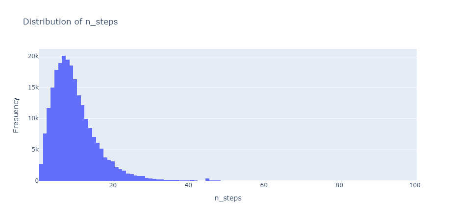
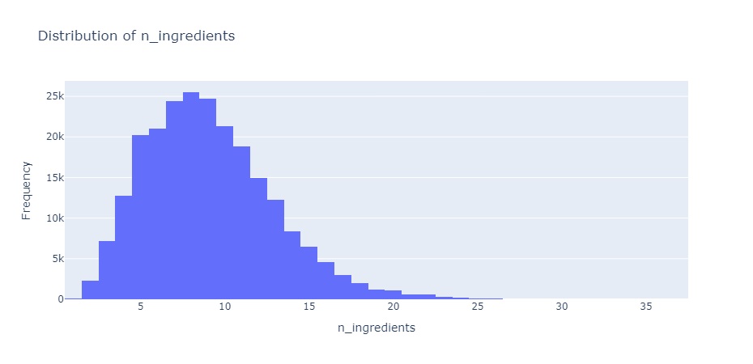
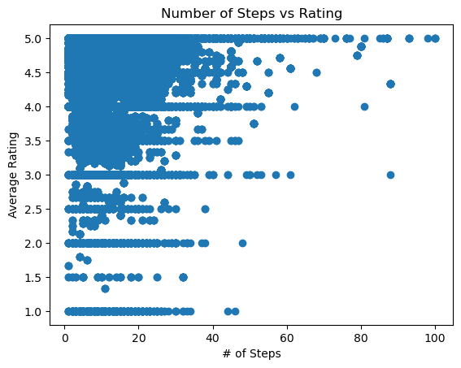

This study investigates the relationship between recipe characteristics, nutritional content, and user ratings to identify key factors that influence perceived recipe quality. Using Food.com datasets, we examine the impact of ingredient count, preparation steps, and nutritional components (calories, fats, sugars, etc.) on user ratings. Insights from this analysis help understand user preferences and guide recipe development.
Two CSV files from Food.com were used:
recipes.csv| Column | Description |
|---|---|
| name | Recipe name |
| id | Recipe ID |
| minutes | Minutes to prepare the recipe |
| contributor_id | ID of the user who submitted the recipe |
| submitted | Date the recipe was submitted |
| tags | Food.com tags for the recipe |
| nutrition | [calories, total fat, sugar, sodium, protein, saturated fat, carbohydrates] |
| n_steps | Number of preparation steps |
| steps | List of preparation steps |
| description | Recipe description |
interactions.csv| Column | Description |
|---|---|
| user_id | ID of the reviewer |
| recipe_id | Corresponding recipe ID |
| date | Review date |
| rating | User rating (1-5) |
| review | User-written review |
The datasets were merged on recipe_id and cleaned. The following steps were taken:
ast.literal_eval.avg_rating column per recipe.Number of Steps per Recipe:
Most recipes have fewer than 20 steps, with a median around 8.

Number of Ingredients:
Most recipes use 5–15 ingredients. Recipes with more than 25 ingredients are considered outliers.

Average Rating vs. Number of Steps:
No strong trend was observed, though extremely long recipes often scored a 5.

Average Rating vs. Calories:
Again, no strong correlation was found.
A heatmap was generated to explore inter-feature correlations.

Most features showed weak correlations with avg_rating.
Using a permutation test:
review column depends on calories.
Question: Do people rate recipes the same regardless of complexity?
avg_rating and n_stepsRecipe complexity (measured by steps) does not significantly influence user ratings.
| Method | Selected Variables | R² | Insight |
|---|---|---|---|
| Forward Selection | calories, protein, carbs | ~0.001 | Variables statistically significant, but weak |
| Backward Selection | Same as above | ~0.001 | No new variables added |
| Mixed Selection | Additional variables (insignificant) | ~0.001 | Did not improve model performance |
While the idea of predicting recipe ratings using nutritional and structural data is compelling, the analysis reveals that such features alone are insufficient. Human taste is nuanced, and user ratings likely depend on more subjective elements not captured here.